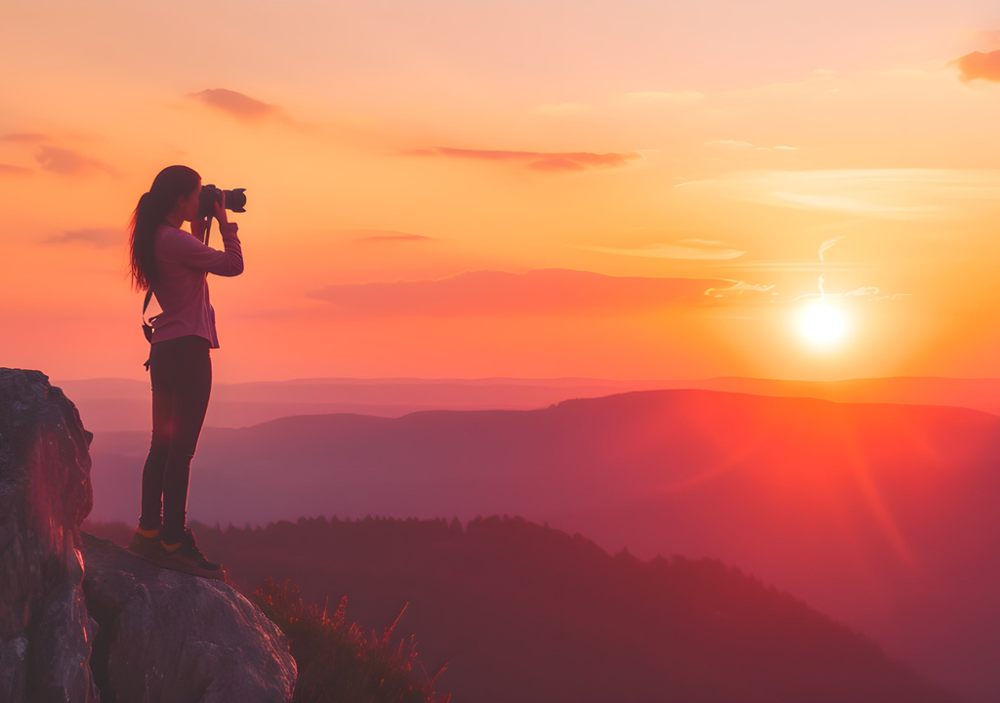
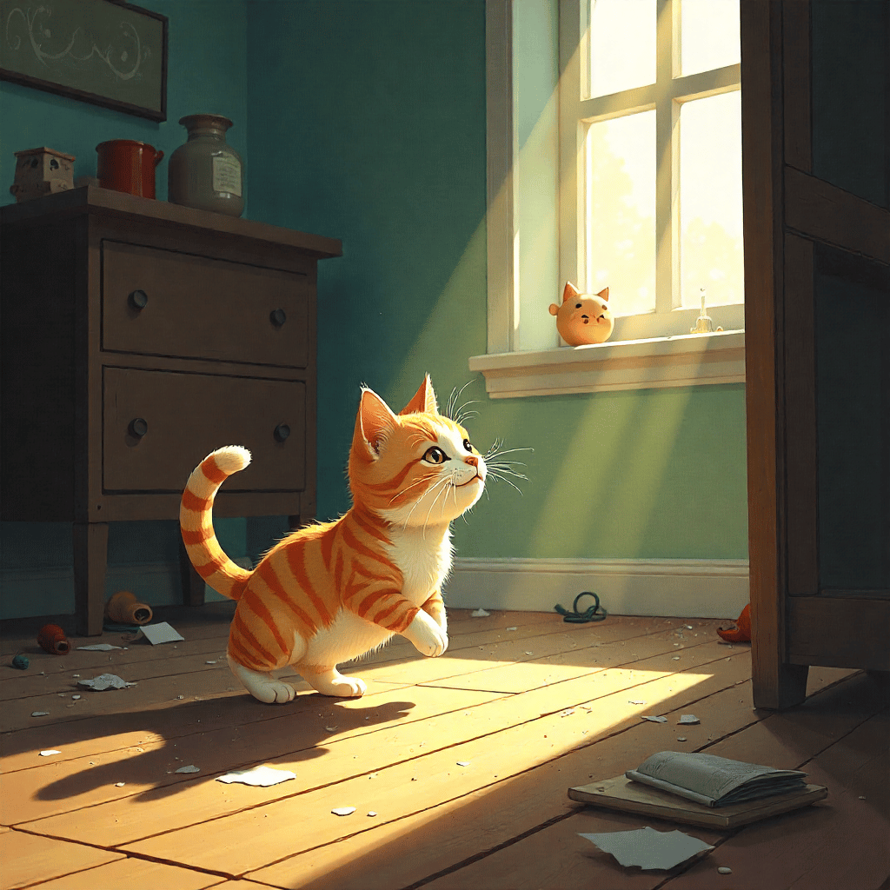

Fotografie ist weit mehr als nur das Drücken eines Auslösers. Es ist die Kunst, Licht zu malen, Geschichten zu erzählen und flüchtige Augenblicke für die Ewigkeit einzufangen. In einer Welt, die sich ständig verändert, bieten uns Fotos eine Möglichkeit, innezuhalten, zu erinnern und die Schönheit im Alltäglichen neu zu entdecken. Egal, ob du ein erfahrener Profi bist oder gerade erst mit deiner ersten Kamera startest – die Welt der Fotografie ist ein endloses Feld der Kreativität und Entdeckung.
Die Grundlagen verstehen: Dein Werkzeug beherrschen
Bevor wir uns den kreativen Aspekten widmen, ist es entscheidend, die grundlegenden Konzepte der Fotografie zu verstehen. Die drei Säulen der Belichtung – Blende, Verschlusszeit und ISO – sind das Herzstück jedes Fotos. Die **Blende** kontrolliert die Menge des Lichts, das auf den Sensor trifft, und beeinflusst gleichzeitig die Schärfentiefe. Eine große Blende (kleine f-Zahl wie f/2.8) erzeugt einen unscharfen Hintergrund, ideal für Porträts, während eine kleine Blende (große f-Zahl wie f/16) alles von vorne bis hinten scharf abbildet, perfekt für Landschaften.
Die **Verschlusszeit** bestimmt, wie lange der Sensor dem Licht ausgesetzt ist. Eine schnelle Verschlusszeit (z.B. 1/1000 Sekunde) friert Bewegungen ein, während eine langsame Verschlusszeit (z.B. 1/30 Sekunde oder länger) Bewegung verwischt und kreative Effekte wie Lichtspuren erzeugt. Der **ISO-Wert** ist die Empfindlichkeit deines Sensors gegenüber Licht. Ein niedriger ISO-Wert (z.B. 100) liefert die beste Bildqualität mit wenig Rauschen, während ein hoher ISO-Wert (z.B. 3200) es dir ermöglicht, bei schlechten Lichtverhältnissen zu fotografieren, aber oft mit mehr Bildrauschen einhergeht.
Wenn du diese drei Elemente bewusst einsetzt, kannst du die Kontrolle über deine Bilder übernehmen, anstatt dich auf die Automatik deiner Kamera zu verlassen. Das ist der erste Schritt, um von "Schnappschüssen" zu wirklich "fotografierten" Bildern zu gelangen.

Komposition: Das Auge des Betrachters führen
Ein technisch perfektes Foto kann flach wirken, wenn die Komposition nicht stimmt. Die Komposition ist die Art und Weise, wie die Elemente in deinem Bild angeordnet sind. Sie führt das Auge des Betrachters und erzeugt Harmonie oder Spannung. Die berühmte **Drittel-Regel** ist ein guter Ausgangspunkt: Stell dir vor, dein Bild ist durch zwei horizontale und zwei vertikale Linien in neun gleiche Teile unterteilt. Platziere wichtige Elemente entlang dieser Linien oder an ihren Schnittpunkten, um ein ausgewogeneres und interessanteres Bild zu erhalten als bei einer zentralen Platzierung.
Aber Komposition geht über Regeln hinaus. Nutze **Führungslinien** (z.B. Straßen, Zäune, Flussläufe), um das Auge in das Bild zu ziehen. Achte auf **Muster und Wiederholungen**, die eine visuelle Anziehungskraft haben. **Rahmung** durch natürliche Elemente (wie Äste, Türen oder Fenster) kann deinem Motiv Tiefe verleihen. Und vergiss nicht den **negativen Raum** – der leere Bereich um dein Motiv herum, der es hervorheben und dem Bild Ruhe verleihen kann.
Licht verstehen und nutzen
Fotografie bedeutet "Malen mit Licht". Das Licht ist der wichtigste Faktor für die Stimmung und Qualität deiner Bilder. Das **goldene Stunde** (kurz nach Sonnenaufgang und kurz vor Sonnenuntergang) bietet weiches, warmes Licht, das ideal für Porträts und Landschaften ist. Das **blaue Stunde** (kurz vor Sonnenaufgang und nach Sonnenuntergang) taucht die Welt in kühle Blautöne und ist perfekt für Stadtansichten oder stimmungsvolle Szenen.
Auch das **Tageslicht** kann vielseitig sein. Hartes Mittagslicht kann starke Kontraste und Schatten erzeugen, die für dramatische Effekte genutzt werden können, während bewölkte Tage ein weiches, diffuses Licht bieten, das ideal für schmeichelhafte Porträts und Makroaufnahmen ist. Experimentiere auch mit **Gegenlicht** – es kann wunderschöne Silhouetten und Lichtkränze um dein Motiv zaubern.
Storytelling: Mehr als nur ein Bild
Jedes gute Foto erzählt eine Geschichte. Was möchtest du mit deinem Bild ausdrücken? Zeigt es Freude, Melancholie, Staunen oder Action? Überlege dir vor dem Auslösen, welche Emotionen oder Botschaften du vermitteln möchtest. Das kann durch das Motiv selbst geschehen, durch den Ausdruck eines Gesichts, durch die Umgebung oder durch die Art und Weise, wie du das Licht einsetzt.
Für Katzenliebhaber ist das Storytelling besonders spannend. Halte die spielerischen Momente deiner Katze fest, ihren ruhigen Schlaf am Fenster, den lauernden Blick vor der Jagd nach einem Spielzeug. Diese Momente erzählen die Geschichte ihres einzigartigen Charakters und ihrer Beziehung zu dir.
Die Reise geht weiter: Bearbeitung und Austausch
Die Arbeit eines Fotografen endet nicht mit dem Auslösen. Die **Postproduktion**, also die Bearbeitung deiner Bilder, ist ein wichtiger Schritt, um das volle Potenzial auszuschöpfen. Programme wie Adobe Lightroom oder kostenlose Alternativen wie Darktable ermöglichen es dir, Farben anzupassen, Belichtung zu korrigieren, Bildrauschen zu reduzieren und den letzten Schliff zu geben. Ziel ist es, deine Bilder zu verbessern und deine künstlerische Vision zu verwirklichen, nicht, sie zu verfälschen.
Und schließlich: Teile deine Arbeiten! Ein Foto wird erst lebendig, wenn es gesehen wird. Ob auf Social Media, in einem persönlichen Blog oder bei Ausstellungen – der Austausch mit anderen ist inspirierend und hilft dir, dich weiterzuentwickeln. Hol dir Feedback ein, lerne von anderen und genieße die Gemeinschaft der Fotografen.
Die Fotografie ist eine ständige Reise des Lernens und Entdeckens. Nimm deine Kamera in die Hand, experimentiere, mache Fehler und lerne daraus. Die Welt ist voller Motive, die darauf warten, von dir festgehalten zu werden. Und vielleicht ist das nächste atemberaubende Foto ja das deiner schnurrenden Katze im goldenen Licht.
Zurück zur Startseite